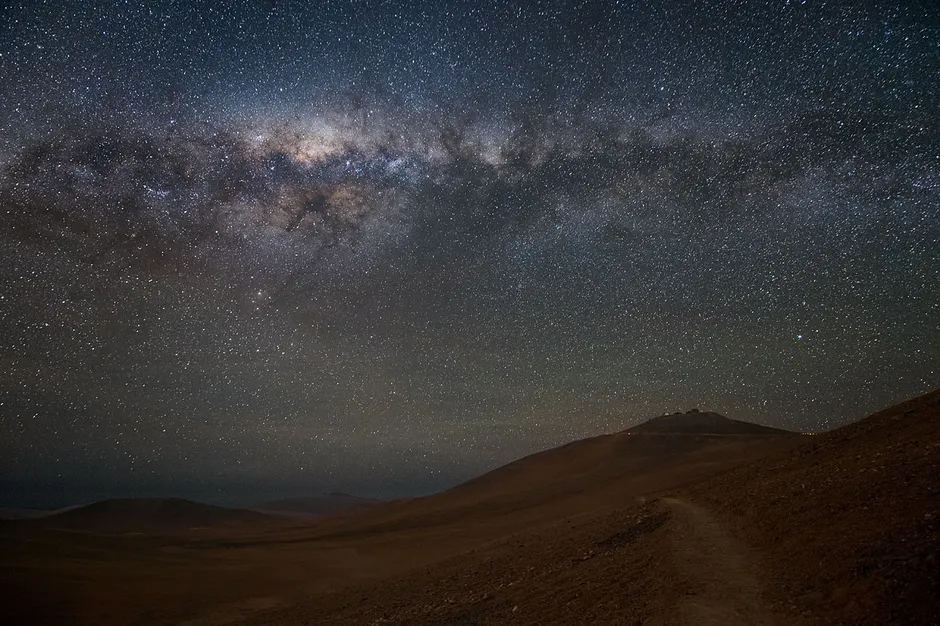
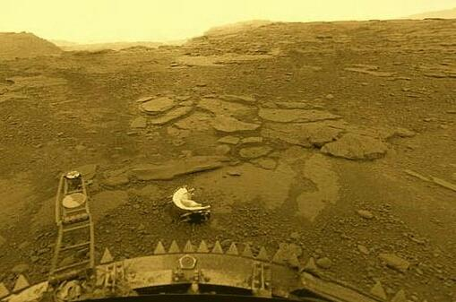
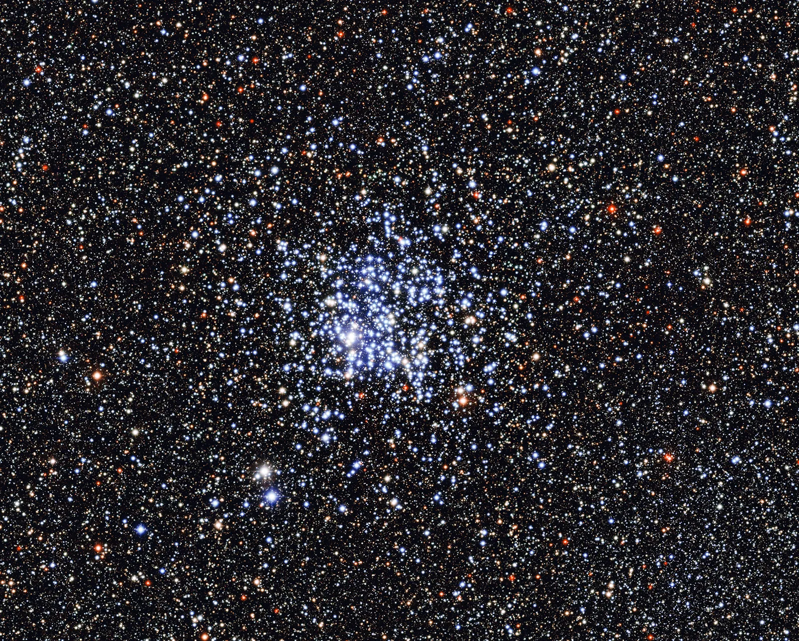

Introduction
Space is vast and mysterious, filled with wonders that spark our curiosity. Here are some amazing facts about the universe:
Amazing Facts
- The hottest planet in our solar system is Venus, with surface temperatures reaching over 450°C (842°F).
- There are more stars in the universe than grains of sand on all the beaches of Earth.
- A day on Venus is longer than a year due to its slow rotation.
- Jupiter has the most moons in our solar system, with over 90 confirmed moons orbiting the gas giant.
- Light from the Sun takes approximately 8 minutes and 20 seconds to reach Earth.
- Black holes are regions in space where gravity is so strong that nothing, not even light, can escape.
- Saturn is famous for its stunning ring system, which is composed of ice, rock, and dust particles.
- The largest volcano in the solar system is Olympus Mons, located on Mars. It is about 13.6 miles (22 kilometers) high!
Visual Wonders
  Space Exploration
Humans have been exploring space for decades. The first human-made object to reach space was the V-2 rocket launched by Germany in 1944. Later, the Soviet Union's Sputnik 1 became the first artificial satellite in 1957.
In 1969, NASA's Apollo 11 mission made history when Neil Armstrong and Buzz Aldrin became the first humans to walk on the Moon.
Today, space agencies around the world continue to push the boundaries of exploration, from sending rovers to Mars to studying distant galaxies using advanced telescopes like the James Webb Space Telescope.
Expanding Universe
The mysteries of space continue to inspire scientists and dreamers alike. Did you know that the universe is still expanding? This discovery, made in the 20th century, reshaped our understanding of cosmology.
Some scientists believe that the universe might expand forever, while others think it could eventually collapse back on itself in a "Big Crunch." Either way, the study of the cosmos helps us understand our place in it.
Explore more about space and its mysteries by visiting NASA's official website.